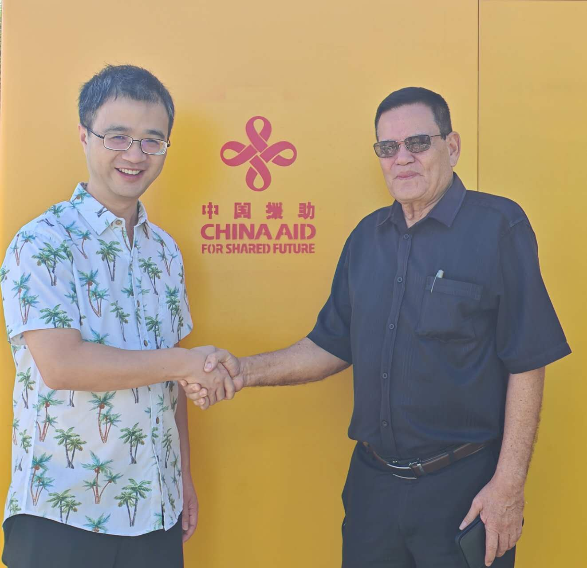

Last Week in the Pacific: Women, Children, and Energy
On 13 March, PRC Ambassador Li Minggang held the first quarterly working consultation with Vanuatu’s Ministry of Foreign Affairs.
Li reviewed bilateral achievements spanning “political mutual trust” and “mutual support in multilateral affairs.” He also briefed his counterparts on China’s “Two Sessions” and 15th Five Year Plan, citing Beijing’s readiness to align development goals with Vanuatu and “promote the comprehensive strategic partnership between the two countries to a higher level.”
The Vanuatu Foreign Ministry thanked China for its long-term support and reaffirmed the country’s commitment to the One China Policy.
Summary of PRC Activity
Chinese embassies across the region marked International Women’s Day with events directed at women in local communities. In Kiribati and Tonga, Chinese officials promoted donations to educational facilities, including financial contributions and solar equipment. In Papua New Guinea, China handed over a power grid project, while in Kiribati, it delivered a generator for the House of Parliament.
This Week’s Big Themes:
A Day for the Women
Chinese diplomats across the region marked International Women’s Day with targeted outreach. Ambassador Wu Wei in FSM hosted a charity sale for local women’s initiatives. In the Solomon Islands, Ambassador Cai Weiming gifted sewing machines to local women; in Fiji, Chargé d’affairs Wang Yuan did the same—both framing the donations for income generation. In Nauru and Tonga, embassy staff delivered care packages and met with women to discuss family, finances, agriculture, and healthcare.
Supporting Events
- Federated States of Micronesia: International Women’s Day Charity Sale
- Nauru: International Women’s Day Church Service
- Fiji: International Women’s Day Village Visits
- Tonga: International Women’s Day Village Visits
- Solomon Islands: Sewing Machine Donations
Think of the Children
Chinese diplomats in Kiribati and Tonga focused on educational projects this week. Kiribati’s Chargé d’affaires Zhao Jian attended a ceremony for a new boarding school under construction on Tamana Island—the home island of Hon. Tekeeua Tarati, Minister of Infrastructure and Sustainable Energy. In Tonga, Counselor Ruan Dewen visited Tupou College to check on the installation of solar PV facilities, timing the trip to the college’s 160th anniversary. This visit marks Ruan’s third stop at a Tongan educational institution in as many weeks, following earlier trips to Tonga College and the University of the South Pacific’s Tonga Campus.
Supporting Events
- Kiribati: Chargé d’affaires Zhao Jian Marks Donation to KPC SSS Boarding School
- Tonga: Ruan Dewen Celebrates Donation of Solar Facilities to Tupou College
Energy

Chinese diplomats in Papua New Guinea and Kiribati handed over energy infrastructure to local counterparts. In PNG, Ambassador Yang Xiaoguang attended a ceremony transferring the completed second phase of a power grid to PNG Minister for State Enterprises William Duma. In Kiribati, the Chargé d’affaires Zhao Jian delivered a generator for Parliament House, calling the handover “the delivery of respect, trust, and bright future.”
Supporting Events
- Papua New Guinea: Ambassador Hands Over Powergrid Project Phase 2 to PNG Minister for State Enterprises
- Kiribati: Chargé d’affaires Zhao Jian Delivers Generator for Parliament House
* The PRC Pacific Embassies Monitor provides systematic, open-source tracking of Beijing’s public diplomatic activities across the nine Pacific Island Countries hosting Chinese missions. The monitor captures official embassy social media and website posts, supplemented by local sources, to offer a weekly structured intelligence report that bridges critical information gaps on regional engagement.